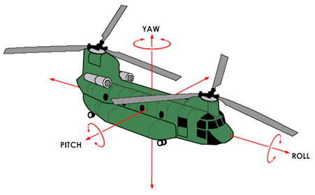
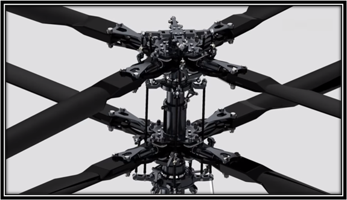
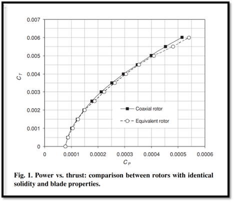

ENG0018 Computer Laboratory 2023/24
Student URN: 6731998
Conference paper: Helicopter Aerodynamics
(Aerovest, 2023.)
Abstract
Helicopter rotor designs are complex and the need for each varies depending on the situation. The aim of this paper is to gain a better understanding of how helicopters fly, the rotor systems, the advantages and drawbacks of each design. The single rotor with a tail rotor is the most common design of used in helicopters. The main rotor produces a torque, and the tail rotor cancels out this force by applying an equal force in the opposite direction. The tandem rotor has two rotors spinning in opposite directions which cancels out each other’s torque. The tandem rotor is used most often in heavy lifting military helicopters due to its speed and power. The coaxial rotor is very stable when perfectly timed, as the rotors are on the same axis the torque is then cancelled out. Overall, all three designs offer a use in different circumstances.
Introduction
Thousands of helicopters are used every day with varying designs. I was intrigued by the complex intricacies of how a helicopter flies and how the rotor blades interact with the air. This article discusses how a helicopter works aerodynamically and the benefits and drawbacks of three rotor types: the tandem rotor, coaxial rotor and single rotor with a tail rotor (Seddon and Newman, 2011). I also mention the practicality of each type of rotor design and where they are commonly used.
Basic Helicopter Aerodynamics
Firstly, looking at basic helicopter aerodynamics. The turbine engine starts rotating which drives the transmission and causes the rotor to start spinning. Using Bernoulli’s principle (Breithaupt, 2015) the low velocity – high pressure air underneath the blade causes lift. The rotor blades can be tilted at an angle, and this directs the air causing thrust (Cadence, N.D.).
Single Rotor with Tail Rotor
For helicopters with a single rotor with tail rotor design, the force of the main rotor spinning creates torque and exerts a force onto the main body of the helicopter that would make it spin with equal force in the opposite direction (Cadence, N.D.). The tail rotor resolves this and is designed to produce an equal force in the opposite plane and direction to counteract this force. The tail rotor also adds manoeuvrability as you can apply more power to the tail rotor, causing the helicopter to yaw (X-axis rotation) at a controlled rate (see figure 1). The single rotor and tail rotor system is the most commonly used design in helicopters (Chopper Spotter, 2023) because it is relatively lightweight, a simple design and only one transmission is needed and therefore it is cheaper compared with other designs. A disadvantage of this design is dissymmetry of lift, which is a problem that occurs when the lift applied to the front and rear side of the rotor is unbalanced (Macronomics, 2018). This only occurs in forward flight as the “advancing blade has a higher airspeed than the retreating blade” (Macronomics, 2018). As the retreating blade has less lift due to this slower airspeed, the front of the helicopter can pitch up because of this imbalance (Macronomics, 2018). Dissymmetry of lift can be very dangerous if the pilot cannot react fast enough.

Figure 1
Tandem Rotors
The second design I researched was the tandem rotor, which is commonly used on larger helicopters (Chopper Spotter, 2023). Tandem rotors use two oppositely spinning blades, this cancels out the torque and negates the need for a tail rotor. This is another solution to keeping the helicopter stable. Advantages of tandem rotor helicopters are they are more powerful and can lift bigger loads than single rotor designs. For example, a Chinook can lift around 12,700kg (Fairlift, 2023). These helicopters are mainly manufactured for military use because of its lifting power and utility.The two rotor blades cross paths but they are synchronised to not collide. The two rotors make them heavier, but the added power does make them faster (Aerovest, 2023).The downside to this design is that the rotors need a sophisticated transmission in order to synchronise the rotors perfectly. This transmission and the need for two rotors makes tandem helicopters expensive to produce.
Coaxial Rotors
The final design I researched was the coaxial rotor design. Another method used to counteract the torque of a single rotor is to have two rotors on the same axis spinning in opposite directions. “A net-zero torque around the main body of the helicopter is created” (Interesting Engineering, 2020). This makes the helicopter extremely stable. An advantage of the coaxial rotor design allows the helicopter to hover very effectively (Interesting Engineering, 2020). The two rotors provide a gyroscope which further improves the stability of the helicopter.A drawback of the coaxial rotors is that the rotors need to be timed to near perfection in order to work (Interesting Engineering, 2020). If the timing is not perfect the helicopter is unstable and unable to fly. Coaxial rotors are also expensive as they are complex (as shown in figure 2) and need to be very accurate. (Interesting Engineering, 2020). Coaxial rotors are very stable but this design makes very fine adjustments when manoeuvring more difficult (Interesting Engineering, 2020). Figure 3. shows is of the rotor thrust coefficient against the rotor power coefficient. The two graph lines are comparing the performance of a coaxial rotor and a conventional 4 bladed rotor. The rotors have identical radii and have the same solidity, yet the coaxial uses very slightly less power for the same thrust, showing the coaxial rotor design is more efficient with these rotor dimensions. (Kim and Brown, 2010). ,

Figure 2 ,

Figure 3
Conclusion
In this paper I aimed to research the 3 different types of helicopters I researched how helicopter blades interact with the air and how this varies with each design. The most used design amongst helicopters is the single rotor (Chopper Spotter, 2023) as it is relatively cheap, has a simpler design and weighs less especially compared with the tandem rotor design. The tandem rotor design provides the most specialised utility with its powerful rotors for lifting heavy objects and machinery. The need for this design is limited but it is very effective at what it is made to do. I found the coaxial rotor the most intriguing with how complex the design of the transmission is and the perfect synchronisation of the two rotors. The coaxial design is incredibly stable while hovering and the two rotors produce its own gyroscope. In conclusion each of the three rotor types have their own individual advantages and disadvantages and uses in different situations.
References
"https://aerovest.co.uk/how-fast-do-helicopters-fly/#:~:text=Generally%2C%20their%20speed%20is%20between,293%20mph%20(472%20kph).">Aerovest. How fast do helicopters fly (2023). Accessed: 24 October 2023
,
Breithaupt. J. Physics, 4th Edition, Pages 397-401. (2015). Accessed 31 October 2023,
Cadence. Helicopter Aerodynamcis: Understanding how helicopters fly? (N.D.). Accessed 16 October 2023 ,
Chopper Spotter. What are the 6 different types of helicopters? (2023). Accessed 29 October 2023 ,
Fairlift. How much weight can be lifted by a helicopter? (2023). Accessed 29 October 2023 ,
English. T. The perfect helicopter: understanding coaxial rotor design. (2020). Accessed 10 October 2023 ,
Kim and Brown. A comparison of coaxial and conventional rotor performsnce. (2010). Accessed 10 October 2023 ,
Macronomics. Seeking Alpha. Dissymmetry of lift. (2018). Accessed 24 October 2023 ,